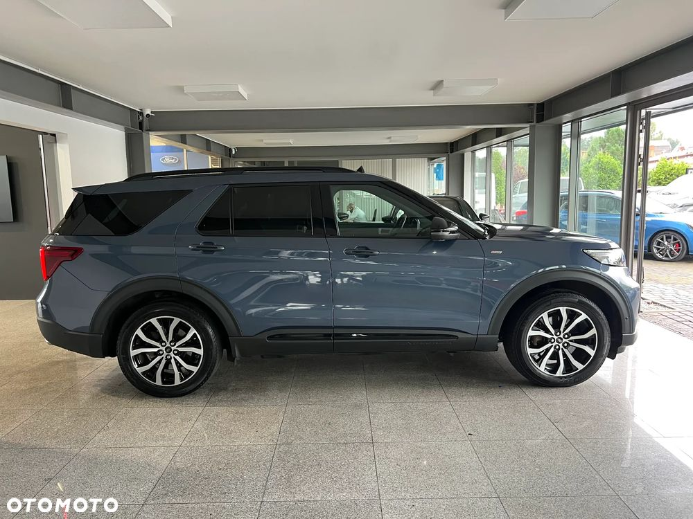
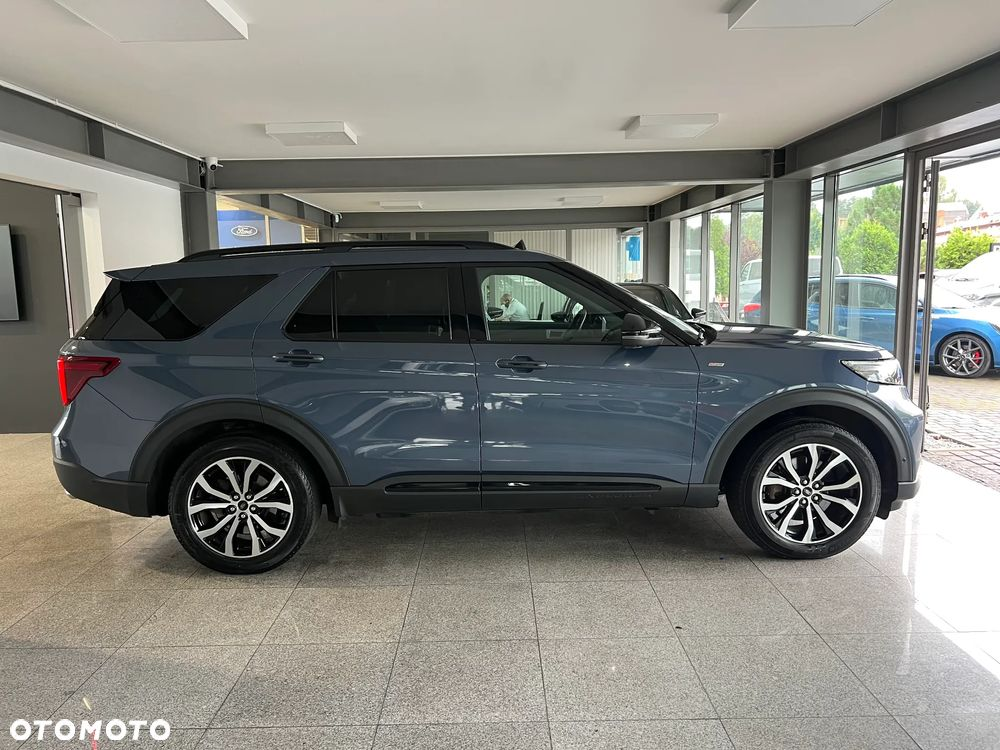
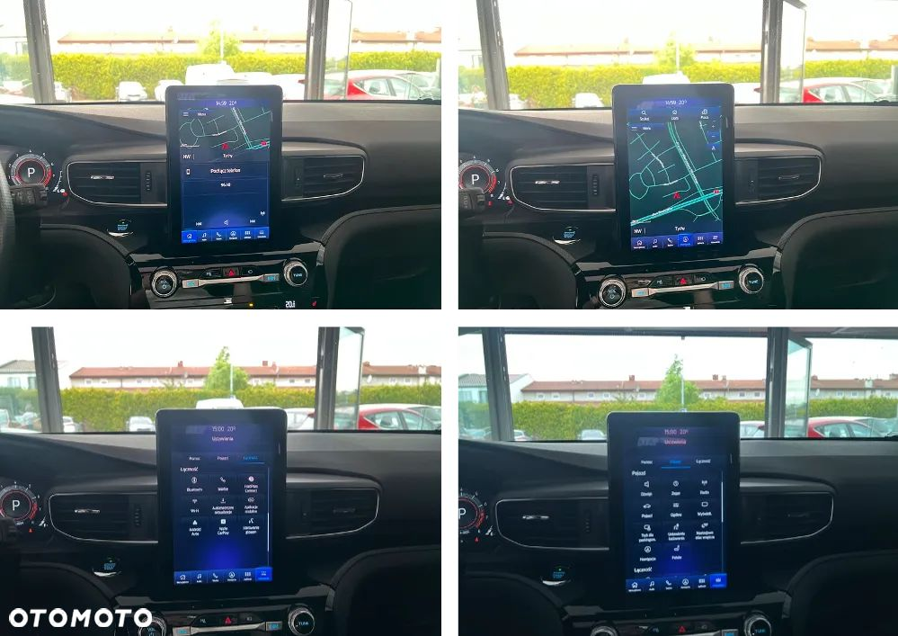
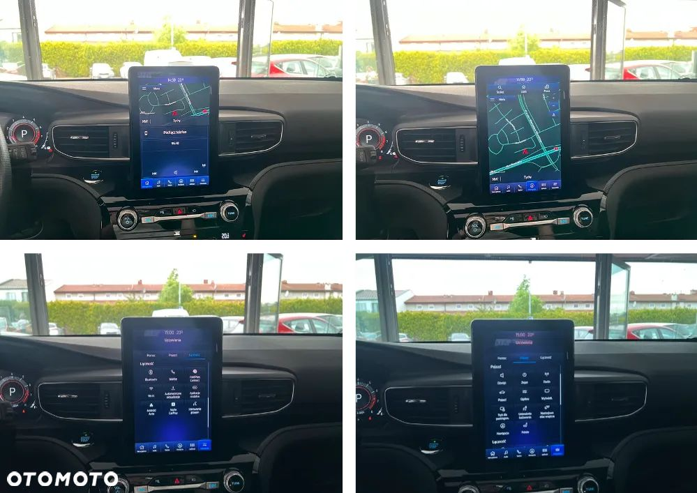

GRUPA MIRAI
AUTORYZOWANY DEALER FORD OFERUJE:
EXPLORER
✔️ Wersja wyposażenia: ST-line AWD
✔️ Silnik: 3.0 (Hybryda Plug-in) - 457KM = 100km silnik elektryczny, 357km silnik spalinowy
✔️ Skrzynia biegów: Automatyczna
✔️ Rok produkcji : 2021
✔️ Faktura VAT 23%
✔️ Możliwość dodatkowej GWARANCJI
───────────────────
Przedmiotem sprzedaży jest Ford Explorer w wersji wyposażenia ST-line posiadający pełne wyposażenie. Samochód napędza sprawdzony silnik hybrydowy o mocy 357KM, który w połączeniu z automatyczną skrzynią daje rewelacyjne wrażenia z jazdy. Średnie spalanie w cyklu mieszanym to zaledwie 11 litrów na 100km. Prezentowany egzemplarz od nowości był w posiadaniu tylko jednego właściciela. Posiada pełna historię serwisową, wszystkie serwisy wykonywany w ASO Forda'a według zaleceń producenta. Idealne rozwiązanie dla rodzin z dziećmi, łączy funkcjonalność z komfortem, nie rezygnując przy tym z dynamicznego stylu jazdy.
───────────────────
Historia serwisowa:
-134132km - 10.06.2025 - Planowany przegląd w serwisie Forda / Wymiana oleju / filtr oleju / filtr zapachów / płyn hamulcowy / filtr powietrza silnika
-103081km - 24.04.2024 - Planowany przegląd w serwisie Forda / Wymiana oleju / filtr oleju / filtr zapachów / filtr powietrza silnika
- 70133km - 09.05.2023 - Planowany przegląd w serwisie Forda / Wymiana oleju / filtr oleju / filtr zapachów / płyn hamulcowy
- 43030km - 10.08.2022 - Planowany przegląd w serwisie Forda / Wymiana oleju / filtr oleju / filtr zapachów / filtr powietrza
- 21800km - 19.01.2022 - Planowany przegląd w serwisie Forda / Wymiana oleju / filtr oleju / filtr zapachów
───────────────────
ZAPYTAJ O MOŻLIWOŚĆ POZOSTAWIENIA SAMOCHODU W ROZLICZENIU
───────────────────
WYPOSAŻENIE
✔️ światła przednie LED
✔️ czujniki parkowania przód, tył oraz boki
✔️ felgi aluminiowe R20
✔️ kamery 360
✔️ przyciemniane szyby
✔️ czujnik deszczu
✔️ czujnik zmierzchu
✔️ elektryczne szyby
✔️ elektryczne lusterka
✔️ rolety w drugim rzędzie
✔️ czujnik martwego pola - BLISS
✔️ bezkluczykowe otwieranie pojazdu - keyless go
✔️ bezkluczykowe odpalanie pojazdu - keyless entry
✔️ centralny zamek sterowany pilotem
✔️ komputer pokładowy
✔️ skórzana kierownica z regulacją
✔️ zdalne sterowanie z kierownicy
✔️ zestaw głośnomówiący z bluetooth
✔️ system wspomagający utrzymanie w pasie ruchu
✔️ system rozpoznawania znaków drogowych
✔️ tempomat aktywny
✔️ duży dotykowy wyświetlacz
✔️ fabryczna nawigacja GPS
✔️ Car Play / Android Auto
✔️ podgrzewana przednia szyba
✔️ podgrzewane boczne lusterka
✔️ podgrzewane dysze spryskiwaczy
✔️ podgrzewane przednie fotele
✔️ podgrzewana kierownica
✔️ podgrzewane tylne fotele zewnętrzne
✔️ wentylowane fotele przednie
✔️ opcje masażu w fotelach przednich
✔️ indukcyjna ładowarka telefonu
✔️ podłokietnik
✔️ wejście USB, typu C
✔️ łopatki do zmiany biegów przy kierownicy
✔️ automatyczna klimatyzacja dwu strefowa
✔️ panel klimatyzacji drugiego i trzeciego rzędu
✔️ fotele w 3 rzędzie elektrycznie rozkładane i składane
✔️ nagłośnienie B&O
✔️ pamięć fotela kierowcy
✔️ oświetlenie nastrojowe - ambiente
✔️ auto-hold
✔️ parkassist - automatyczne parkowanie
✔️ system START / STOP
✔️ ISOFIX
✔️ lusterka składane elektrycznie
✔️ hak
 
 
